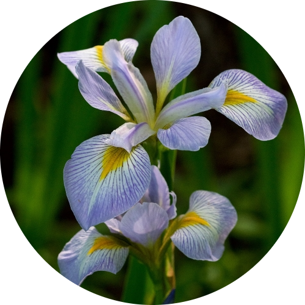

Iris Virginica
Water: 1-2 inches every week.
Ideally requires direct sunlight but does appreciate some shade on hot sunny summer days. Performs best under acidic and we soil. needs about 1-2 inches of water every week. Check soil to avoid overwatering as this can cause roots to rot. After establishing it is not necessary to water Iris.